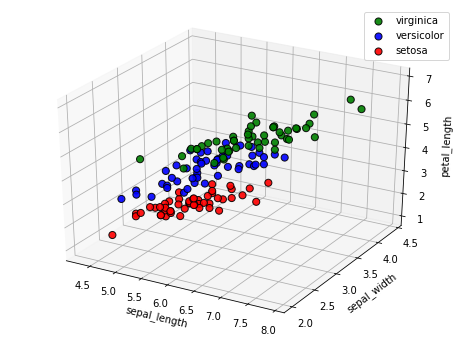
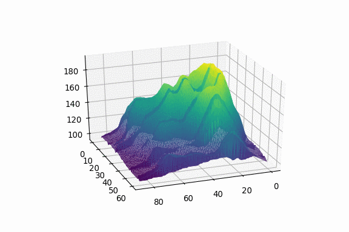

This will be the second blog about 3d plotting and I plan to write about more complex blog in the future. Stay tuned! But for right now, let’s focus on 3d plotting.
In this blog post, I want to focus on the concept of 3d plotting and mainly on the implementation of it in Python,we should know how to create effective data visualisations. Without visualisation, you’ll be stuck trying to Understand the numbers and imagine thousands of data points in your head.
Most of the data visualisation model commen with te same basic things like : scatter plots, line plots, box plots, bar charts, and heat maps. These are all fantastic for gaining quick insight into a dataset.
But what if we took things a step further. A 2D plot can only show the relationships between a single pair of axes x-y; a 3D plot on the other hand allows us to explore relationships of 3 pairs of axes: x-y, x-z, and y-z.
there are 2 main library for 3d plt:
1-mpl_toolkits
2- plotly
You may need to install ploty so on mac run the line (pip install plotly) in jupyter notebook
import matplotlib as mpl
import matplotlib.pyplot as plt
import numpy as np
import pandas as pd
import seaborn as sns
from mpl_toolkits import mplot3d
from mpl_toolkits.mplot3d import Axes3D,axes3d
from mpl_toolkits.mplot3d.axes3d import get_test_data
from matplotlib import cm
from matplotlib import colors as mcolors
from matplotlib.lines import Line2D
from matplotlib.collections import PolyCollection
from matplotlib.ticker import LinearLocator, FormatStrFormatter
import plotly.plotly as py
from plotly.offline import init_notebook_mode, iplot
init_notebook_mode(connected=True)
import plotly.graph_objs as go
<script type="text/javascript">
window.PlotlyConfig = {MathJaxConfig: 'local'};
if (window.MathJax) {MathJax.Hub.Config({SVG: {font: "STIX-Web"}});}
if (typeof require !== 'undefined') {
require.undef("plotly");
requirejs.config({
paths: {
'plotly': ['https://cdn.plot.ly/plotly-latest.min']
}
});
require(['plotly'], function(Plotly) {
window._Plotly = Plotly;
});
}
</script>
We gonna use the iris data from seaborn library
iris = sns.load_dataset("iris")
dataset = iris
df =dataset.copy()
df.head()
| sepal_length | sepal_width | petal_length | petal_width | species | |
|---|---|---|---|---|---|
| 0 | 5.1 | 3.5 | 1.4 | 0.2 | setosa |
| 1 | 4.9 | 3.0 | 1.4 | 0.2 | setosa |
| 2 | 4.7 | 3.2 | 1.3 | 0.2 | setosa |
| 3 | 4.6 | 3.1 | 1.5 | 0.2 | setosa |
| 4 | 5.0 | 3.6 | 1.4 | 0.2 | setosa |
we start with basic liner line
fig = plt.figure(figsize=(9, 6))
ax = fig.add_subplot(111, projection='3d')
x = df[df['species']== 'setosa']['sepal_length']
y = df[df['species']== 'setosa']['sepal_length']
z = df[df['species']== 'setosa']['sepal_length']
ax.scatter(x, y, z, c='r', marker='o')
ax.set_xlabel('X Label')
ax.set_ylabel('Y Label')
ax.set_zlabel('Z Label')
plt.show()
we can Connect the point with line using scatter3D
fig = plt.figure(figsize=(9, 6))
ax = plt.axes(projection="3d")
z_line = df[df['species']== 'virginica']['petal_length']
x_line = df[df['species']== 'versicolor']['petal_length']
y_line = df[df['species']== 'setosa']['petal_length']
ax.plot3D(x_line, y_line, z_line, 'white')
z_points = df[df['species']== 'virginica']['petal_length']
x_points = df[df['species']== 'versicolor']['petal_length']
y_points = df[df['species']== 'setosa']['petal_length']
ax.scatter3D(x_points, y_points, z_points, c=z_points, cmap='hsv');
plt.show()
when ploting 3d shape the z axis shouldn't always be Diffenet data set it can be a combine of x and y
"""
========================
Create 3d surface plots
========================
Plot a contoured surface plot
"""
fig = plt.figure(figsize=(9, 6))
ax = fig.gca(projection='3d')
x = df[df['species']== 'setosa']['sepal_length']
y = df[df['species']== 'setosa']['sepal_width']
# Make data.
X = x
Y = y
X, Y = np.meshgrid(X, Y)
R = np.sqrt(X**2 + Y**2)
Z = np.sin(R)
# Plot the surface.
surf = ax.plot_surface(X, Y, Z, cmap=cm.coolwarm,
linewidth=0, antialiased=False)
# Customize the z axis.
ax.set_zlim(-1.01, 1.01)
ax.zaxis.set_major_locator(LinearLocator(10))
ax.zaxis.set_major_formatter(FormatStrFormatter('%.02f'))
# Add a color bar which maps values to colors.
fig.colorbar(surf, shrink=0.5, aspect=5)
plt.show()
More over we can 3d plot depending on one axies
'''
==============
3D lineplot
==============
Demonstration of a basic lineplot in 3D.
'''
x = df[df['species']== 'setosa']['petal_width']
x = sum(x)
# Set the legend font size to 10
mpl.rcParams['legend.fontsize'] = 10
# Create figure object
fig = plt.figure(figsize=(9, 6))
# Get the current axes, creating one if necessary.
ax = fig.gca(projection='3d')
# Create data point to plot
theta = np.linspace(-4 * x, 4 * x, 100)
z = np.linspace(-2, 2, 100)
r = z**2 + 1
x = r * np.sin(theta)
y = r * np.cos(theta)
# Plot line graph
ax.plot(x, y, z, label='Parametric curve')
# Set default legend
ax.legend()
plt.show()
'''
==============
Contour Plots
==============
Plot a contour plot that shows intensity
scatter_plot('sepal_length','sepal_width','petal_length','virginica','g','o','virginica')
scatter_plot('sepal_length','sepal_width','petal_length','versicolor','b','o','versicolor')
scatter_plot('sepal_length','sepal_width','petal_length','setosa','r','o','setosa')
'''
x = df[df['species']== 'virginica']['petal_length']
y = df[df['species']== 'versicolor']['petal_length']
z = df[df['species']== 'setosa']['petal_length']
# Create figure object
fig = plt.figure(figsize=(9, 6))
# Get the current axes, creating one if necessary.
ax = fig.gca(projection='3d')
# Get test data
# Plot contour curves
cset = ax.contourf(X, Y, Z, cmap=cm.coolwarm)
# Set labels
ax.clabel(cset, fontsize=9, inline=1)
plt.show()
we can use plotly as it have an interactive ,also can show each point x,y,z
x = df[df['species']== 'virginica']['sepal_length']
y = df[df['species']== 'virginica']['sepal_width']
z = df[df['species']== 'virginica']['petal_length']
iris = go.Scatter3d(
x = x,
y = y,
z = z,
mode='markers',
marker=dict(size=10,color=z,colorscale='Viridis',opacity=0.8)
)
data = [iris]
layout = go.Layout(margin=dict(l=0,r=0,b=0,t=0))
fig = go.Figure(data=data, layout=layout)
iplot(fig)
here were 3d plot shine
global grafico #figure
#Function scatter_plot group data by argument name, plot and edit labels
def scatter_plot(x_label,y_label,z_label,clase,c,m,label, sizes=(200)):
x = df[df['species'] == clase ][x_label] #groupby Name column x_label
y = df[df['species'] == clase ][y_label]
z = df[df['species'] == clase ][z_label]
# s: size point; alpha: transparent 0, opaque 1; label:legend
grafico.scatter(x,y,z,color=c, edgecolors='k',s=50, alpha=0.9, marker=m,label=label)
grafico.set_xlabel(x_label)
grafico.set_ylabel(y_label)
grafico.set_zlabel(z_label)
return
grafico = plt.figure(figsize=(8, 6)).gca(projection='3d') #new figure
scatter_plot('sepal_length','sepal_width','petal_length','virginica','g','o','virginica')
scatter_plot('sepal_length','sepal_width','petal_length','versicolor','b','o','versicolor')
scatter_plot('sepal_length','sepal_width','petal_length','setosa','r','o','setosa')
plt.legend()
plt.show()

we can save th 3d plot as gif as in the plot from the volcano database
# Get the data (csv file is hosted on the web)
url = 'https://python-graph-gallery.com/wp-content/uploads/volcano.csv'
data = pd.read_csv(url)
# Transform it to a long format
df=data.unstack().reset_index()
df.columns=["X","Y","Z"]
# And transform the old column name in something numeric
df['X']=pd.Categorical(df['X'])
df['X']=df['X'].cat.codes
# We are going to do 20 plots, for 20 different angles
fig = plt.figure()
ax = fig.gca(projection='3d')
ax.plot_trisurf(df['Y'], df['X'], df['Z'], cmap=plt.cm.viridis, linewidth=0.2)
plt.show()
for angle in range(1,20,2):
fig = plt.figure()
filename='pic/'+str(angle)+'.png'
plt.savefig(filename, dpi=96)
<Figure size 432x288 with 0 Axes>
